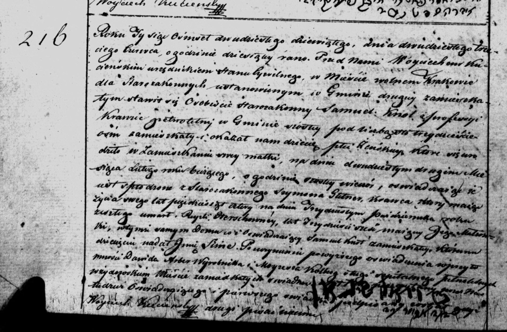
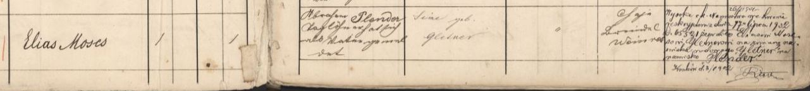
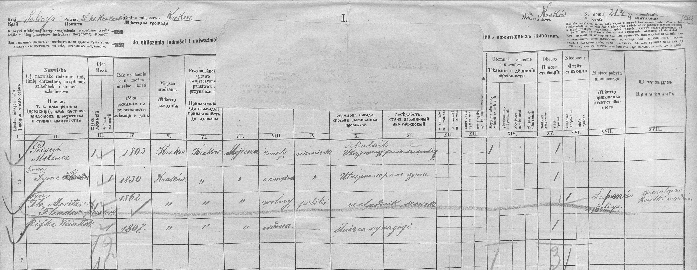
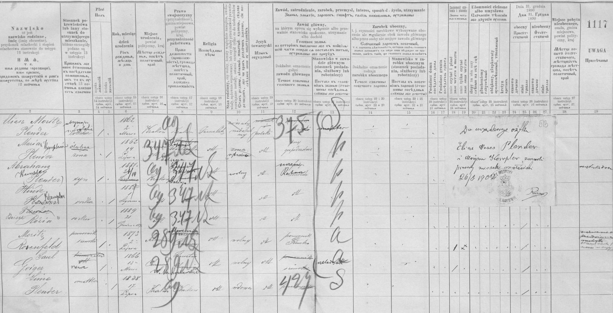

Timothée Chalamet: The Kraków File
Primary archival reconstruction of the maternal Flender, Kempler, and Gletner lineages across 19th-century Kraków vital registers, census records, and Kazimierz tenement addresses.

Archival Findings & Research Dossier
The genealogical investigation traces the family roots of actor Timothée Chalamet directly to historical archives in Kraków. Through careful examination of birth, marriage, and census records from the 19th century, we reconstruct the ancestral path of the Flender family in the heart of Galicia.
Pełny dokumentowany opis śledztwa, skany oryginalnych metryk oraz szczegółowe drzewo genealogiczne dostępne są bezpośrednio w szczegółowym studium opublikowanym na blogu badawczym.
Przeczytaj pełny artykuł na blogu ↗Archival Scans & Vital Records (Evidence)
Original 19th-century documents and census registers from state archives. Click any scan to open and inspect the high-resolution evidence in a separate window.

🔍 Click to EnlargeVital Record / Civil Registry (1829)
Kraków civil registration records documenting early family milestones and foundational generational links in the district.

🔍 Click to EnlargeVital Record / Birth Act (1862)
Archival act from the civil registries of Kraków detailing paternal and maternal descent lines.
 🔍 Click to Enlarge
🔍 Click to Enlarge
Vital Record / Marriage & Death Act (1892)
Parish and civil registry documentation establishing residence and familial alliances in historic Kraków.

🔍 Click to EnlargeAustro-Hungarian Population Census (1880)
Household registration list documenting exact residential addresses, tenement occupancy, and professions in Kraków's Kazimierz district.

🔍 Click to EnlargeAustro-Hungarian Population Census (1900)
Turn-of-the-century population census records tracking demographic shifts and familial continuity.
Pedigree & Lineage Reconstruction
Hierarchical family tree focusing on the maternal lineage of Timothée Chalamet (Nicole Flender branch), reconstructed strictly from primary vital records and census data.
Field Research & Kraków Footage
On-location video documentation from historical streets, tenements, and archives.
Field Footage #01
Documentary walkthrough of historical locations and ancestral context in Kraków.
Field Footage #02
On-site exploration of historical districts, tenements, and archival repositories.
Field Footage #03
Archival context, street-level topography, and paleographic analysis.
Field Footage #04
Final summary of the Kraków archival field study and documentary findings.